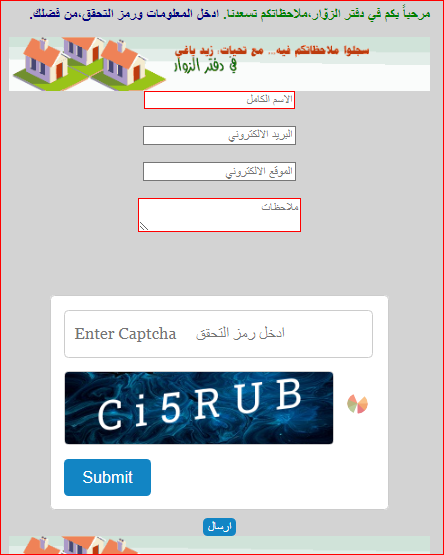

examples CAPTCHA أمثلة على الكابتشا
1- المثال الحي:مثال حقيقي يعمل بشكل صحيح ولكن كـــ Demo
2- ملفات المثال:يمكن تحميلها والتعديل عليها كما تشاء.
1-مثال على استخدام (Captcha) في نموذج ادخال بيانات(اظهار أيقونة التحميل ):

ملف (HTML) وملفات صور وملف ( jquery-JSCRIPT) وملف (CSS) .
ملفات المثال في الموقع الحالي مثال حي مثال حي
2-مثال على استخدام (Captcha) في نموذج ادخال بيانات(اختفاء الكابتشا بعد نجاح عملية التحقق ):
ملف (HTML) وملفات صور وملف ( jquery-JSCRIPT) وملف (CSS) .
ملفات المثال في الموقع الحالي مثال حي مثال حي
3-مثال على استخدام (Captcha) في نموذج ادخال بيانات:
المكونات: ملف (HTML) وملفات صور ثلاثة وأخيراً ثلاثة ملفات (jquery).
ملفات المثال على الموقع الحالي مثال حي مثال حي
4- مثال على استخدام (Captcha) في نموذج ادخال بيانات:
ملف (HTML) وملفات صور ثلاثة وأخيراً ملفا (jquery)
ملفات المثال في الموقع الحالي مثال حي مثال حي مثال حي
5- مثال خامس: ادخال البيانات على مرحلتين
المرحلة الأولى: الكابتشا
المرحلة الثانية: ادخال بيانات النموذج
ملفات المثال : ملفا (HTM) وملفا صور وملف (JSCRIPT) وملف (CSS) ..
ملفات المثال في الموقع الحالي مثال حي مثال حي
6-مثال على استخدام (Captcha) (alphanumeric)
ملف htm وملفات JQuery
ملفات المثال في الموقع الحالي مثال حي مثال حي مثال حي مثال حي